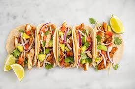

Our Menu
 |
Our home cooked ribs are our famous for the great meat quality and quantity. Smoothered with our imfamous Amor Sauce and with a side of Kole Slaw and Corn bread. | Those little rib-bits with the every popular crispyness. This comes with a house salad and corn bread to round out your meal. | More than just pulled pork we put kole slaw, bacon, and grilled onions. This comes with a side of mashed potatoes in order to round out the meal. |
| Those saucy nugs, renderers of terror, known around the world. Choose your sauce Buffalo, Honey BBQ, or our home dry rub. With a side of ranch and celery. |  |
We got chicken sadwiches. They might not be Popeyes levels of chicken sandwich but we have a lot of people who can vouch for it. Plus you get slaws and fries. |  | We have some Carne Asade and some Chicken left over to make you tacos. Choose your meat and corn or flour shells ,and get some corn bread on the side. |